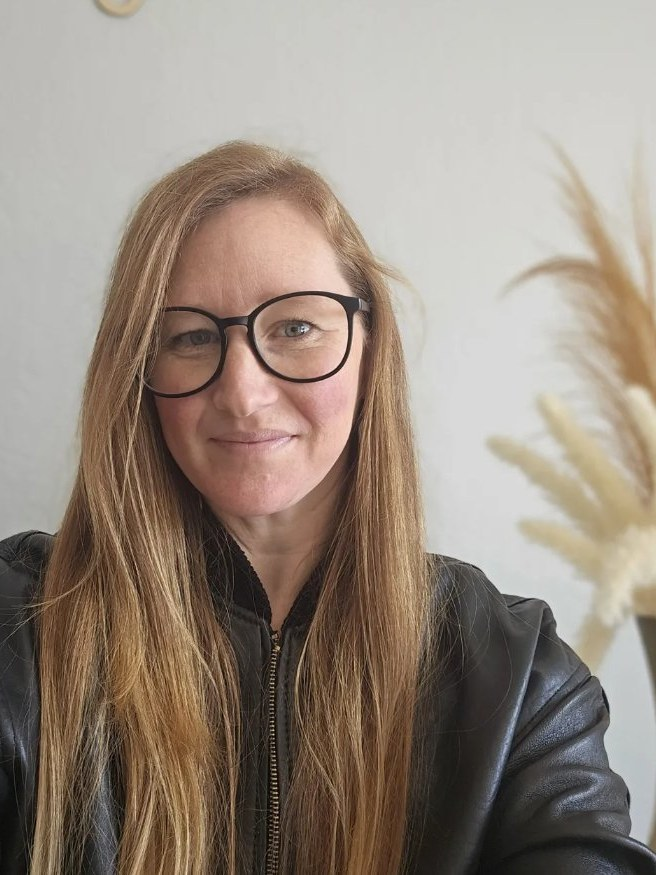

Six weeks. Your temperament, your charisms, your growing edges — woven into a framework rooted in Scripture, the Catechism, and the saints. Formed in the teaching and tradition of the Catholic Church. Not self-help with a cross on it. The real thing.
"Peace I leave with you; my peace I give to you." — John 14:27
This program is for the Catholic woman who loves God, loves her family — and keeps losing herself somewhere in between.
A proprietary Catholic coaching framework built on Scripture, Ignatian spirituality, and the Examen. Six questions. Practiced daily. Life-changing over time.
"Rooted and built up in him, established in faith, and overflowing with thankfulness."
— Colossians 2:7From your first assessment to your final session — every step is designed to help you go deeper, not faster.
This is not self-help with a cross on it. Every part of this framework draws from the Catechism, the spiritual tradition of the Church, and the lived wisdom of the saints — brought into the real weight of your everyday life.
Church teaching on the temperaments, charisms, virtue, and the sacraments grounds every session in something larger than any coaching framework.
The women and men who ran this race before us knew the same faults, the same patterns, the same longing for God. Their lives are our map.
Holiness is not a retreat experience. It is built Tuesday by Tuesday, in the kitchen and the carpool and the quiet before everyone wakes up.
"She is clothed with strength and dignity, and she laughs without fear of the future."
— Proverbs 31:25Four programs, one framework. Each season of the liturgical year is an invitation to go deeper.
The foundation. Temperament, charisms, fault, and saboteurs — all woven into six weeks of coaching using the R.O.O.T.E.D. Model. This is where every woman begins.
Active preparation. Making room for Christ. The four Advent themes — Hope, Peace, Joy, Love — explored through the lens of your Soul Portrait.
Surrender. Fasting, prayer, and almsgiving as the three movements of interior freedom — each explored through your specific temperament and fault.
Theology of the body meets the R.O.O.T.E.D. Model. Physical rhythms — sleep, movement, food, rest — as sacred ground for transformation.
"I finally have a name for what I've been carrying. And for the first time, I understand why I do what I do — and what God is actually asking me to do instead."

Catholic Life Coach · Founder, Rooted in Real Life · Chico, CA
I built this program because I needed it. I know what it is to love God sincerely and still find yourself running on fumes, managing everything, and quietly losing yourself somewhere in the middle of all the good you are trying to do.
Rooted in Real Life is the framework I built from the Catechism, the saints, Ignatian spirituality, the Benedictine way of learning, and five years of interior work. It is grounded in the teaching and tradition of the Church — because holiness is not acquired in a weekend. It is grown, slowly, in the ordinary.
"Peace I leave with you; my peace I give to you." — John 14:27
That peace is what this work is for.
Take the free Soul Portrait Assessment. No commitment, no pressure — just an honest look at how God made you.
Free · No credit card · Takes about 15 minutes
Rooted in Real Life is built by hand, one woman at a time. Every journal, every Soul Portrait, every session is the result of real hours and real prayer.
If something here has met you — a framework that made sense, a portrait that felt like your own soul, a moment where you felt genuinely seen — your gift helps this work continue and reach the next woman who needs it.
Rooted in Real Life is a small business, not a registered nonprofit. Gifts are a generous act of support but are not tax-deductible. Every dollar given helps keep this ministry-minded work alive.
"Each of you should give what you have decided in your heart to give, not reluctantly or under compulsion, for God loves a cheerful giver."
— 2 Corinthians 9:7